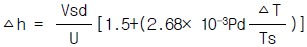
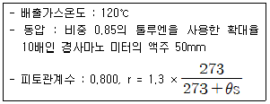
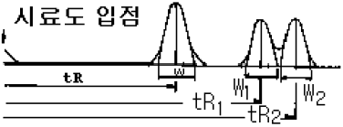
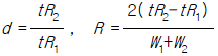
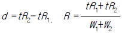
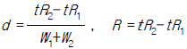
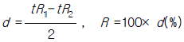

대기환경기사 (2003-05-25 기출문제)
1과목: 대기오염 개론
1. 다음 업종 가운데 그 생산공정에서 황화수소가 발생 할 가능성이 가장 적은 것은?
- 펄프공업
- 석유화학공업
- 암모니아공업
- 화학비료제조공업
(정답률: 알수없음)

2. 대기 중의 CO2에 관한 설명으로 알맞지 않는 것은?
- 대기 중의 이산화탄소는 해양이나 식물에 흡수되어 대기 중에서 제거되며 추정 체류시간은 2 - 4년으로 알려져 있다
- 대기 중에 배출된 이산화탄소의 약 50%이상은 해수에 흡수되고 그 과정과 흡수능력은 널리 알려져 있다
- 현재의 대기 중의 이산화탄소의 농도 증가는 주로 인위적인 방출에 의한 것이다
- 대기 중의 이산화탄소 농도는 여름에 감소하고 겨울에 증가하며 북반구에서 상대적으로 이산화탄소의 농도가 높다
(정답률: 알수없음)
3. 다음 중 온실효과(Green House Effect)에 관한 내용으로 알맞지 않는 것은?
- 대기 중 적외선을 흡수하는 기체에 기인한다.
- 지구 온난화로 도시지역에서 오존농도가 상승되게 된다
- 실제 온실에서의 보온작용과 같은 원리이다.
- 이산화탄소, 메탄, CFC 11, 12 등이 대표적 온실가스이다.
(정답률: 알수없음)
4. 맑은 여름날 해가 뜬 후 부터 오후 최고기온이 나타나는 시간까지의 연기의 분산형을 가장 바르게 순서대로 나타낸 것은?
- 부채형 → 훈증형 → 원추형 → 환상형
- 부채형 → 원추형 → 상승형 → 환상형
- 부채형 → 환상형 → 훈증형 → 상승형
- 부채형 → 구속형 → 환상형 → 상승형
(정답률: 30%)
5. 다음의 대기오염물질 중에서 고등식물에 대한 독성이 가장 큰 것은?
- Cl2
- SO2
- HF
- NO2
(정답률: 알수없음)
6. CO(일산화탄소)에 관한 설명으로 적당하지 않는 것은?
- 가연성분의 불완전 연소시나 자동차에서 많이 발생된다.
- 대기 중에서 이산화탄소로 산화되기 어렵다.
- 수용성이므로 대기 중 농도는 강우에 의한 영향을 크게 받는다.
- 대기 중에서 평균체류시간은 발생량과 대기 중 평균 농도로 부터 1-3개월로 추정되고 있다.
(정답률: 알수없음)
7. 이산화황 1 V/V ppm에 상당하는 W/W ppm으로 맞는 것은? (단, 0℃, 1기압 , 공기밀도 1.293kg/m3 기준 )
- 1.18
- 1.81
- 2.21
- 2.46
(정답률: 알수없음)
8. 180℃, 0.8atm에서 SO2농도가 0.25g/m3 이라면 표준상태에서는 몇 ppm인가?
- 167.4
- 181.5
- 201.8
- 225.2
(정답률: 알수없음)
9. 먼지입자의 크기에 관한 설명으로 알맞지 않은 것은?
- 역학적 등가직경은 stokes직경과 공기역학적직경으로 세분된다.
- 공기역학적 직경은 본래의 먼지와 침강속도가 동일하며, 1g/cm3인 구형입자의 직경으로 정의된다.
- 공기역학적 직경은 먼지의 여과집진과정, 호흡기침착 공기정화기의 성능조사 등 입자의 특성파악에 주로 이용된다.
- 공기역학적 직경을 알면 입자의 밀도, 광학적크기, 형상계수 등의 물리적 변수가 중요시 된다.
(정답률: 알수없음)
10. 0.2V/V%의 SO2를 포함하고 발생량이 500Sm3/min인 매연의 30%가 년간 같은 방향으로 흘러가 그 지역의 식물에 피해를 주었다. 10년 후에 그 지역에 살아남은 수목이 전체의 1/10 이였을 때 10년간 이 지역에 피해를 준 SO2량은?
- 약 4,000톤
- 약 4,500톤
- 약 5,000톤
- 약 5,500톤
(정답률: 알수없음)
11. 다이옥신에 관한 설명으로 알맞지 않은 것은?
- PCB의 부분산화 또는 불완전연소에 의하여 생성된다.
- 2,3,7,8-TCDD는 가장 유해한 다이옥신으로 표준상태에서 증기압이 매우 낮은 고형 화합물이다.
- 다이옥신이 고온에서 완전연소될 때, 완전분해된다고 하더라도, 연소 후 연소가스의 배출시, 저온에서 재생성이 가능하다.
- 유해 폐기물을 소각할 때,도시폐기물 소각 때 보다 수천배의 다이옥신이 배출된다.
(정답률: 알수없음)
12. 다음 중 무색기체로 CO와 같이 혈액 중의 Hb와 결합하여 산소 운반능력을 감소시키는 기체는?
- PAN
- 알데히드
- NO
- HC
(정답률: 알수없음)
13. 아래 자료를 이용 유효굴뚝 높이를 구한 값은? [굴뚝높이 258m, 안지름 1.15m, 풍속 3.7m/sec, 기온 18℃, 대기압 1000 millibar, 굴뚝가스속도 10m/sec, 굴뚝가스 온도 152℃] (단,

를 적용)- 약 242 m
- 약 266 m
- 약 279 m
- 약 293 m
(정답률: 50%)
14. 태양상수를 이용하여 지구표면의 단위면적이 1분동안에 받는 평균 태양에너지를 구하는 식으로 적절한 것은? (단, CM: 평균 태양에너지, C:태양상수, R :지구반지름)
- Csub>M = C × [(π R2 /4π R2)]
- Csub>M = C × [(4π R2 /π R2)]
- Csub>M = C × [(π R /2π R2)]
- Csub>M = C × [(2π R /π R2)]
(정답률: 70%)
15. 지표의 온도가 25℃이고, 1000m 높이에서의 대기온도가 5℃일 때 안정도는?
- 불안정(unstable)
- 중립(neutral)
- 약한 안정(slightly stable)
- 안정(stable)
(정답률: 알수없음)
16. 침강역전(subsidence inversion)에 대한 설명으로 알맞지 않은 것은?
- 하늘이 맑고 바람이 적을때 지표근처의 공기가 낮은 온도로 냉각되면서 침강기류를 형성한다.
- 고기압 영역의 공기가 하강하면서 기온이 단열변화로 승온되어서 발생하는 현상이다.
- 대도시에서 발생한 대기오염 사건은 주로 침강역전과 관련이 있다.
- 단시간의 오염문제라기 보다는 장시간의 오염축적에 의하여 문제를 야기시킨다.
(정답률: 알수없음)
17. Richardson수(數):R 에 관한 설명으로 알맞지 않은 것은?
- R=0 일 때는 기계적 난류만 존재한다.
- R 이 큰 음의 값을 가지면 대류가 지배적이어서 바람이 약하게 되어 강한 수직운동이 일어난다.
- 무차원수로서 근본적으로 기계적인 난류를 대류난류로 전환시키는 율(率)을 측정한 것이다.
- 기계적인 난류와 대류난류중에서 어느 것이 지배적인가를 R 을 근거로 추정할 수 있다.
(정답률: 알수없음)
18. 분산모델의 장점 및 특징이라 볼 수 없는 것은?
- 미래의 대기질을 예측할 수 있다.
- 2차 오염원의 확인 가능하다.
- 수용체 입장에서 영향평가가 현실적으로 이루어질 수 있다.
- 새로운 오염원이 지역내에 생길 때, 매번 재평가를 하여야 한다.
(정답률: 알수없음)
19. 대기오염물질인 SO2는 1차 대기반응에 의해서 다른 물질로 변환한다고 가정하고, SO2가 대기 중에서 반감기가 4시간이라면 배출된 SO2가 초기농도의 10%에 도달하는데 소요되는 시간은 얼마인가?
- 5.3 hr
- 9.3 hr
- 13.3 hr
- 17.3 hr
(정답률: 알수없음)
20. 분산모델 중 Box Model에 관한 설명이다. 바르지 않은 것은?(오류 신고가 접수된 문제입니다. 반드시 정답과 해설을 확인하시기 바랍니다.)
- 대기오염물질의 농도가 시간에 따라서만 변화는 0차원 모델이다
- 바람은 상자의 측면에서 불며 그 속도는 일정하다
- 정상적인 장소에서 선오염원의 농도를 구하는데 적합하다
- 수평, 수직확산이 고려되지 않아 적용에 제한적이다.
(정답률: 알수없음)
2과목: 연소공학
21. 수소 20%, 수분 20%인 액체연료의 고위발열량이 15,000(㎉/㎏)일 때, 저위 발열량(㎉/㎏)은?
- 9,950
- 12,120
- 13,800
- 14,500
(정답률: 알수없음)
22. 가로, 세로, 높이가 각각 3m, 1m, 1.5m인 연소실에서 연소실 열발생율을 2.5 x 105kcal/m3ㆍ hr가 되도록 하려면 1시간에 중유를 몇 kg 연소시켜야 하는가? (단, 중유의 저위발열량은 11,000kcal/kg이다.)
- 약 93
- 약 102
- 약 113
- 약 123
(정답률: 30%)
23. 용적비로 C3H8과 C4H10이 1 : 3으로 혼합된 가스 1Sm3를 완전연소 할 경우 발생되는 CO2량[Sm3]은?
- 3.75
- 4.75
- 5.75
- 6.75
(정답률: 알수없음)
24. 부탄(C4H10) 몇 kg을 완전연소하면 이론적 필요한 공기량이 775kg-air이 되겠는가?
- 약 45kg 부탄
- 약 50kg 부탄
- 약 55kg 부탄
- 약 60kg 부탄
(정답률: 알수없음)
25. 탄소 86%, 수소 13%, 황 1%의 조성인 중유를 연소하고 배기가스를 분석했더니 CO2+SO2가 13%, O2가 3%, CO가 0.5%이었다. 건연소 가스중 SO2농도는?
- 약 590ppm
- 약 670ppm
- 약 720ppm
- 약 780ppm
(정답률: 알수없음)
26. 배출가스 분석결과 (CO2)=13.2%, (O2)=6.6%, (N2)=80.2% (CO)=0.0%일 때 (CO2)max와 공기 과잉계수 m은?
- CO2max : 18.3, m : 1.25
- CO2max : 19.3, m : 1.45
- CO2max : 19.3, m : 1.25
- CO2max : 18.3, m : 1.45
(정답률: 알수없음)
27. 유동층 소각로의 장점과 가장 거리가 먼 것은?
- 로의 구조가 매우 단순하고 구동부가 없어 고장이 적다.
- 유동화 매체로 사용되는 많은 양의 모래가 열저장 매체 구실을 함으로써 로의 일시적 가동 중단시 로의 냉각을 최소화할 수 있다.
- 각 단에서 연소가 잘되도록 교반시켜주어 연소가 잘되도록 한다.
- 연소가스의 체류시간이 짧은 반면 공기와 폐기물간의 접촉 면적이 크므로 완전연소가 가능하다.
(정답률: 알수없음)
28. 가연성 가스의 폭발범위 및 그 위험도에 관한 설명으로 틀린 것은?
- 가스의 온도가 높아지면 폭발범위는 일반적으로 넓어진다.
- 가스압이 높아지면 폭발하한농도는 크게 변화되지 않으나 상한값이 높아진다.
- 폭발한계 농도 이하에서는 폭발성 혼합가스를 생성하기 어렵다.
- 폭발하한농도가 높을수록 위험도는 증가한다.
(정답률: 알수없음)
29. 1mole의 프로판이 완전연소할 때의 AFR은? (단, 부피기준 )
- 9.5
- 19.5
- 23.8
- 33.8
(정답률: 알수없음)
30. 1.5%(무게기준)유황을 함유한 석탄 2ton을 완전연소시키면 표준상태에서 SO2 발생량은 몇 m3인가? (단, 황분은 전량 SO2 로 전환 )
- 13
- 18
- 21
- 24
(정답률: 알수없음)
31. '그을음' 발생에 관한 설명으로 틀린 것은?
- 분해나 산화하기 쉬운 탄화수소일수록 잘 발생된다.
- C/H비가 큰 연료일수록 잘 발생된다.
- -C-C-의 탄소결합을 절단하는 것보다 탈수소가 용이한 연료일수록 잘 발생된다.
- 발생빈도의 순서는 천연가스＜ LPG＜ 제조가스＜ 석탄가스＜ 코크스... 이다.
(정답률: 알수없음)
32. 저발열량이 10,000kcaㅣ/kg, 이론 공기량이 11Nm3/kg, 이론 연소가스량이 11.5Nm3/kg의 중유를 공기비 1.2로 완전연소할 때 이론가스의 온도는? (단, 공기 및 중유의 온도는 20℃, 연소가스의 비열은 0.4kcal/Nm3℃, 건조가스기준 )
- 1965℃
- 1917℃
- 1887℃
- 1845℃
(정답률: 알수없음)
33. 프로판과 부탄의 부피를 1:1로 혼합한 연료를 완전연소한 결과 건조연소가스내의 CO2농도가 10% 라면, 이 연료를 5m3 완전연소할 때 생성되는 건조연소가스량(Sm3)은?
- 125
- 175
- 215
- 257
(정답률: 알수없음)
34. 액체연료를 효율적으로 연소시키기 위해서는 연료를 미립화 하여야 한다. 미립화특성을 결정하는 인자와 가장 관계가 적은 것은?
- 분무유량
- 분무입경
- 분무의 도달 거리
- 분무점도
(정답률: 알수없음)
35. 확산형 가스버너인 포트형을 설계시 주의사항 중 틀린것은?
- 로 내부에서 연소가 완료되도록 가스와 공기의 유속을 결정한다.
- 포트 입구가 작으면 슬래그가 부착해서 막힐 우려가 있다.
- 고발열량 탄화수소를 사용할 경우는 가스압력을 이용하여 노즐로 부터 고속으로 분출케 하여 그 힘으로 공기를 흡인하는 방식을 취한다.
- 밀도가 큰 가스 출구는 하부에, 밀도가 작은 공기 출구는 상부에 배치되도록 하여 양쪽의 밀도차에 의한 혼합이 잘 되도록 한다.
(정답률: 알수없음)
36. 액체연료중 중유의 성상에 관한 다음의 기술 중 잘못된것은?
- 중유는 비중이 클수록 유동점, 점도가 증가한다.
- 중유는 인화점이 150℃ 이상으로 이온도 이하에서는 인화의 위험이 적다.
- 중유의 잔류 탄소분은 일반적으로 7 - 16% 정도이다.
- 점도가 낮은 것은 일반적으로 낮은 비점의 탄화소수를 함유한다.
(정답률: 알수없음)
37. 탄소 85%, 수소 15%의 액체연료를 매시 100kg 연소하는 경우, 연소배기가스의 분석결과 CO2 : 12%, O2 : 4%, N2 : 84%이었다면 1시간당 연소용 공기량[Sm3]은?
- 1,360
- 1,410
- 1,520
- 1,630
(정답률: 알수없음)
38. 기체연료에 관한 설명으로 틀린 것은?
- 액화석유가스는 대부분 석유정제시 얻어지며 보통 프로판과 부탄의 두가지로 구분된다.
- 압력을 가하여 기체상태의 연료를 LPG로 제조하는 이유는 부피가 1/24 - 1/28로 줄어 저장,수송이 용이하기 때문이다.
- 액화천연가스는 메탄을 주성분으로 하는 천연가스를 1기압하에서 -160℃ 근처에서 냉각, 액화시켜 대량수송 및 저장을 가능하게 한 것이다.
- 천연가스는 지질학적으로 수용성 가스, 석탄계 가스석유계 가스로 구분되며 석탄계 가스가 대부분을 차지한다.
(정답률: 0%)
39. 수증기를 완전가스로 본다면 표준상태에서의 비체적(m3/kg)은?
- 0.5
- 1.24
- 1.75
- 2.0
(정답률: 알수없음)
40. 연료 등의 연소시 과잉공기의 비율을 높임으로써 생기는 현상과 가장 거리가 먼 것은?
- CH4, CO 및 C 등 물질의 농도가 감소되는 경향을 보인다.
- 방지시설의 용량이 커지고 에너지손실이 커진다.
- 희석효과가 높아져 연소생성물의 농도가 감소한다.
- 화염의 크기가 작아지고 불완전연소물의 발생농도가 증가한다.
(정답률: 알수없음)
3과목: 대기오염 방지기술
41. 가로 4m, 세로 5m인 두 집진판이 평행하게 설치되어 있고 두판 사이의 중간에 원형철심 방전극이 위치하고 있는 전기집진장치에 굴뚝가스가 1.5 m3/s로 통과하고, 입자이동 속도가 0.085 m/s일 때 집진효율은?
- 67.2%
- 74.3%
- 89.6%
- 94.9%
(정답률: 알수없음)
42. 탈취방법 중 '수세법'에 관한 설명과 가장 거리가 먼 것은?
- 알데히드류, 저급유기산류, 페놀등 친수성의 극성기를 가지는 성분을 제거할 수 있다.
- 수온변화에 따라 탈취효과가 변동되고 압력손실이 큰 것이 단점이다.
- 조작이 간단하며 탈취효율이 우수하여 전처리과정 없이 사용되나 별도의 수처리시설이 필요하다.
- 분뇨처리장, 계란건조장, 주물공장등의 악취제거에 적용될 수 있다.
(정답률: 알수없음)
43. 아래의 유해가스들을 처리하기 위한 방법중 잘못 연결된 것은?
- SiF4 - 활성탄 흡착법
- SO2 - 충전탑
- Cl2 - 흡수법
- Dust gas - 사이클론 스크러버
(정답률: 54%)
44. 다음 가스 흡수법에 사용되는 흡수액이 갖추어야 할 요건 중 맞는 것은?
- 용해도가 낮아야 한다.
- 휘발성이 높아야 한다.
- 흡수액의 점성은 비교적 높아야 한다.
- 용매의 화학적성질과 비슷해야 한다.
(정답률: 알수없음)
45. 물리흡착에 대한 설명으로 옳지 않은 것은?
- 흡착온도를 증가시키면 평형흡착량은 감소한다.
- 결합에너지는 액체분자 사이의 인력과 비슷하다.
- 흡착열은 보통 피흡착물의 증발열보다 낮다.
- van der Waals 힘과 같은 약한 힘으로 결합된다.
(정답률: 알수없음)
46. 부피비로 염화수소 0.7%인 배출가스 3000Sm3/hr를 수산화칼슘으로 처리하여 염화수소를 완전히 제거하기 위한 수산화칼슘의 시간당 필요량은? (단, Ca:40 )
- 약 20㎏
- 약 25㎏
- 약 30㎏
- 약 35㎏
(정답률: 알수없음)
47. 원심력집진기에 관한 내용으로 알맞지 않은 것은?
- 고농도일 때는 직렬로 연결 사용하고 응집성이 강한 먼지인 경우는 병렬연결하여 사용한다.
- 일반적으로 축류식 직진형, 접선유입식, 소구경 multiclone에서 blow down 효과를 얻을 수 있다.
- 함진가스의 온도가 높아지면 집진율은 저하되나 그 영향을 크지 않다.
- 배기관경(내경)이 작을수록 입경이 작은 더스트를 제거할 수 있다.
(정답률: 알수없음)
48. 공기중에 CO2 가스의 부피가 5%를 넘으면 인체에 해롭다고 한다면 지금 300m3 되는 방에서 문을 닫고 80%의 탄소를 가진 숯을 몇 kg을 태우면 해로운 상태로 되겠는가? (단, 기존의 공기중 CO2 가스의 부피는 고려하지 않음, 표준상태 기준)
- 6kg
- 8kg
- 10kg
- 12kg
(정답률: 알수없음)
49. 흡착제의 종류에 따른 일반적인 용도가 잘못 연결된 것은? (단, 흡착제 - 용도)
- 활성탄 - 용제회수, 가스정제
- 활성알루미나 - 휘발유 및 용제 정제
- 실리카겔 - 가스건조, 황분제거
- 보오크사이트 - 석유분류물 처리, 가스건조
(정답률: 알수없음)
50. 헨리의 법칙에 따르는 유해가스가 물속에 2.0k㏖/m3 만큼 용해되어 있을 때, 분압이 258.4㎜ 수주였다면, 이 유해가스의 분압이 38㎜Hg로 될 때 물속의 유해가스 농도는?
- 1.0k㏖/m3
- 2.0k㏖/m3
- 3.0k㏖/m3
- 4.0k㏖/m3
(정답률: 알수없음)
51. Duct중의 배기 gas의 유속을 pitot관(pitot계수:1)으로 측정하였다. 동압의 측정을 위하여 내부에 비중 0.85의 toluene을 담고 있는 확대율 5배의 경사관 압력계(manometer)를 사용하였는데 동압은 경사관의 액주로 80㎜이었다. 이 경우 배기가스의 유속은? (단, 가스 밀도는 상온, 상압에서 1.2㎏/m3이었다.)
- 약 10m/sec
- 약 12m/sec
- 약 15m/sec
- 약 19m/sec
(정답률: 알수없음)
52. 흡수탑에서 기-액의 접촉면적을 크게 하는 것이 필요한데 실제 단위 체적당 유효접촉면적 a(m2/m3)을 구하기가 쉽지 않으므로 액상 총괄물질이동계수 KL과의 곱인 KLㆍa를 계수로 사용한다. 이 계수를 무엇이라 하는가?
- 액체용량계수
- 액체유효면적계수
- 액체전달계수
- 액체분배계수
(정답률: 알수없음)
53. 유해가스를 제거하기 위한 방법 중 연소 및 산화에 관한 설명으로 틀린 것은?
- 가스유량이 많고 유해가스의 농도가 낮은 경우에 주로 사용한다
- 주용도는 악취물질이나 매연의 제거이다
- 가열연소법은 배출가스내 가연성물질의 농도가 매우 낮아 직접연소가 어려울 경우에 주로 사용한다
- 촉매산화법은 낮은 온도에서 반응이 가능하며 분자량이 작은 탄화수소가 큰 탄화수소 보다 쉽게 산화된다
(정답률: 알수없음)
54. 다음 중 가스분산형 흡수장치로만 짝지어진 것으로 가장 알맞는 것은?
- 단탑, 기포탑
- 기포탑, 충전탑
- 분무탑, 단탑
- 분무탑, 충전탑
(정답률: 알수없음)
55. 전기집진기 사용시 적용되는 용어 중 '비저항'(겉보기 전기저항률)에 관련된 설명으로 옳지 않은 것은?
- 일반적으로 100 - 200℃범위에서 전기저항률은 최대로 된다
- 수분량이 증가하면 최대 전기저항률은 고온측으로 이동한다
- 배기가스 중의 SO3 함량이 높을수록 전기저항은 낮아진다
- 전기저항이 1011 Ω ㆍ cm 이상일 때는 점핑현상이 발생된다.
(정답률: 알수없음)
56. 화학공장에서 발생하며 감지농도가 약 0.047ppm인 의약품 냄새가 나는 악취물질로 가장 적절한 것은?
- 페놀
- 벤젠
- 톨루엔
- 에탄올
(정답률: 알수없음)
57. 원심형 송풍기의 성능을 설명하였다. 알맞은 것은?
- 송풍기의 풍량은 회전수의 제곱에 비례한다.
- 송풍기의 풍압은 회전수의 제곱에 비례한다.
- 송풍기의 크기는 회전수의 제곱에 비례한다.
- 송풍기의 동력은 회전수의 제곱에 비례한다.
(정답률: 37%)
58. 후드의 포착속도(Capture Velocity)에 관한 설명으로 알맞는 것은?
- 포착속도는 확산조건, 오염원의 주변 기류에 영향이 크지 않다.
- 오염물질의 발생속도를 이겨내고 오염물질을 후드내로 흡인하는데 필요한 최소의 기류속도를 말한다.
- 유해물질의 발생조건이 빠른 공기의 움직임이 있는 곳에서 활발히 비산하는 경우(분쇄기등)의 제어속도 범위는 15 - 25m/sec 정도이다.
- 유해물질의 발생조건이 조용한 대기중 거의 속도가 없는 상태로 비산하는 경우(가스, 흄등)의 제어속도 범위는 1.5 - 2.5m/sec 정도이다.
(정답률: 알수없음)
59. 입구에서의 분진농도가 10 g/Sm3인 함진가스를 여과집진장치를 이용하여 출구에서의 분진농도를 0.5 g/Sm3으로 유지하고자 한다. 이 여과집진장치는 분진부하가 300g/m2일 때 탈진해주어야 한다면 탈진주기(min)는? (단, 이 때 겉보기여과속도는 2 cm/s이다.)
- 약 26
- 약 34
- 약 43
- 약 46
(정답률: 알수없음)
60. 황성분이 2%(중량기준)인 중유를 20 ton/hr으로 연소하는 시설에서 배기가스 중 SO2를 CaCO3로써 완전탈황할 경우 필요한 이론 CaCO3 양은? (단, 중유 중 S는 모두 SO2로 전환되며 Ca의 원자량:40)
- 0.25 ton/hr
- 0.75 ton/hr
- 1.25 ton/hr
- 1.75 ton/hr
(정답률: 알수없음)
4과목: 대기오염 공정시험기준(방법)
61. 용액의 농도에 관한 설명 중 틀린 것은?
- 보통 용액이라 기재하며, 그 용액의 이름을 밝히지 않은 것은 수용액을 뜻한다.
- 혼합용액(1+2)로 표시한 것은 액체상 성분을 각각 1용량 대 2용량으로 혼합한 것을 뜻함
- 혼합용액(1:2)로 표시한 것은 용질성분 1용량을 용매에 녹여 최종적으로 2용량으로 된다는 뜻이다.
- 액의 농도 (1→ 2)로 표시한 것은 그 용질의 성분이 고체일 때는 1g을 액체일때는 1mL를 용매에 녹여 전량을 2mL가 되도록 하는 비율을 뜻한다.
(정답률: 알수없음)
62. 먼지실측농도가 210mg/Sm3이고 실측 산소농도가 3.5%이다 표준산소 농도로 보정한 먼지농도(mg/Sm3)는? (단, 표준산소 농도: 4% )
- 216
- 212
- 208
- 204
(정답률: 알수없음)
63. 연료의 연소, 금속제련 등에서 배출하는 굴뚝배출 가스 중의 일산화탄소를 분석하는 방법과 가장 거리가 먼 것은?
- 이온전극법
- 비분산 적외선법
- 정전위 전해법
- 가스크로마토그래프법
(정답률: 알수없음)
64. 굴뚝 등에서 배출되는 배출가스 중의 무기 불소 화합물 분석에 대한 설명중에서 틀린 것은?
- 시료채취시 시료중에 먼지가 혼입되는 것을 막기 위해 시료 채취관에 사불화에틸렌제등 불소화합물의 영향을 받지 않는 여과재를 넣는다.
- 시료중의 무기불소 화합물과 수분이 응축하는 것을 막기 위하여 시료채취관 및 시료채취관에서부터 흡수병까지 사이를 140℃이상으로 가열해 준다.
- 시료채취관은 배출가스중의 무기 불소화합물에 의해 부식되지 않는 불소수지관, 구리관 등을 사용한다.
- 불소화합물 분석방법으로는 흡광광도법(질산토륨-네오트린법)과 용량법(란탄-알리자린 콜플렉손법)이 있다.
(정답률: 알수없음)
65. 비분산 적외선 분석계의 구성(순서)으로 가장 적절한 것은? (단, 단광속 분석계인 경우 )
- 광원 - 광학필터 - 회전섹터 - 시료셀 - 비교셀 - 검출기
- 광원 - 회전섹터 - 광학필터 - 시료셀 - 비교셀 - 검출기
- 광원 - 광학필터 - 회전섹터 - 시료셀 - 증폭기 - 검출기
- 광원 - 회전섹터 - 광학필터 - 시료셀 - 검출기 - 증폭기
(정답률: 알수없음)
66. 배출구 시료(먼지측정)채취시 등속 흡인을 위하여 내경 10mm의 원형 노즐(보통형 흡인노즐)을 사용할 때 배출가스 속도 16m/sec, 배출가스중 수증기의 백분율은 14%, 가스미터의 흡인가스 온도는 50℃, 배출가스 온도 100℃ 대기압은 760mmHg, 측정점에서의 정압은 750mmHg, 습식가스 미터내의 게이지 가스압은 900mmHg, 가스미터로 흡입되는 가스의 수증기 포화압은 90mmHg 이다. 이 때 가스 미터에 있어서의 분당 등속 흡인된 공기량은?
- 약 54ℓ /min
- 약 66ℓ /min
- 약 75ℓ /min
- 약 82ℓ /min
(정답률: 알수없음)
67. 크로모트로핀산법으로 포름알데히드를 정량할 때 흡수 발색액 제조에 필요한 시약은?
- H2SO4
- CH3COOH
- NaOH
- NH4OH
(정답률: 알수없음)
68. 굴뚝중의 배출가스의 유속을 피토관으로 측정하였다. 측정조건이 다음과 같다면 유속은?

- 3.5m/sec
- 4.2m/sec
- 7.7m/sec
- 9.2m/sec
(정답률: 알수없음)
69. 대기오염공정시험법의 배출허용기준시헙법(흡광광도법)에서 브롬화합물을 분석하는 시약에 관한 내용으로 알맞지 않는 것은?
- 흡수액은 수산화나트륨 0.4g을 물에 녹여 100mL로 한다.
- 브롬이온표준원액 1㎖에 브롬이온 1㎎이 포함되도록 제조한다.
- 과망간산칼륨(0.32W/V%)용액은 과망간산칼륨 0.79g을 물에 녹여 250㎖메스플라스크에 넣고 물로 표선까지 채운다.
- 황산 제2철 암모늄 용액은 황산 제2철 암모늄 3g을 물 100㎖에 녹여 갈색병에 보관한다.
(정답률: 알수없음)
70. 직경이 2.5m인 원형굴뚝의 먼지측정을 위한 측정점수는?
- 4
- 8
- 10
- 12
(정답률: 알수없음)
71. 대기오염공정시험방법상 굴뚝 배출가스 중 총탄화수소의 측정에 관한 설명으로 틀린 것은?
- 총탄화수소분석은 흡광광도법 또는 원자흡광광도법의 분석기를 사용하며 폭발위험이 없어야 한다.
- 시료채취관은 스테인레스강으로 하고 굴뚝중심 부분의 10%범위내에 위치할 정도의 길이의 것을 사용한다
- 시료도관은 스테인레스강 또는 테프론 재질로 시료의 응축방지를 위해 가열할 수 있어야 한다.
- 기록계를 사용할 경우에는 최소 1회/분이 되는 기록계를 사용한다.
(정답률: 알수없음)
72. 그림의 가스크로마토그램 예에서 두 개의 접근한 피이크(peak)의 분리정도를 나타내기 위하여 분리계수 또는 분리도를 가지고 분리능을 구한다. 다음 중 분리계수(d)와 분리도(R)를 구하는 식으로 맞는 것은?





(정답률: 알수없음)
73. 원자흡광광도법 적용시 사용되는 용어의 정의로 잘못된것은?
- 역화: 불꽃의 연소속도가 크고 혼합기체의 분출속도가 작을 때 연소현상이 내부로 옮겨지는 것
- 공명선: 원자가 외부로 부터 빛을 흡수했다가 다시 먼저 상태로 돌아갈 때 방사하는 스펙트럼선
- 충전가스: 중공음극램프에 채우는 가스
- 선프로파일: 파장에 대한 스펙트럼의 폭을 나타내는 곡선
(정답률: 알수없음)
74. 시료중의 페놀류를 수산화나트륨용액(0.4w/v%)에 흡수시킨 포집액을 발색제로 발색시 알맞은 pH범위는? (단, 흡광광도법 기준, 굴뚝배출가스중의 페놀류)
- pH 9± 0.2
- pH 10± 0.2
- pH 11± 0.2
- pH 12± 0.2
(정답률: 알수없음)
75. 다음 중 분석대상 가스와 흡수액을 연결한 것이다. 옳지 않은 것은?
- 염화수소 - NaOH용액
- 황화수소 - 아연아민착염용액
- 염소 - 과산화수소수
- 비소 - NaOH용액
(정답률: 알수없음)
76. 황화수소를 요오드 적정법으로 정량할 때 종말점의 판단을 위한 지시약은?
- 녹말 용액
- 메틸렌 레드
- 아르세나조 Ⅲ
- 메틸렌 블루
(정답률: 알수없음)
77. 소각로, 소각시설 및 그 밖의 배출원에서 배출되는 입자상 및 가스상 수은의 측정, 분석에 관한 설명으로 틀린것은?
- 환원기화 원자흡광광도법: 배출원에서 등속으로 흡인된 입자상과 가스상 수은은 흡수액인 산성 과망간산칼륨 용액에 채취된다.
- 환원기화 원자흡광광도법: 측정범위는 0.001 - 0.02mg/L 표준편차율은 5 - 10% 범위이다.
- 흡광광도법: 흡광도 490nm에서 측정하는 방법이다.
- 흡광광도법: 추출제로는 디티존사염화탄소를 사용한다.
(정답률: 알수없음)
78. 링겔만 매연농도표법을 이용한 매연 측정에 관한 내용 중 틀린 것은?
- 매연의 검은 정도는 6종으로 분류한다.
- 될수 있는 한 무풍일 때 측정한다.
- 연돌구 배경의 검은 장해물을 피해 연기의 흐름에 직각인 위치에 태양광선을 측면으로 받는 방향으로부터 농도표를 측정자 앞 16m에 놓는다.
- 매연 배출구에서 30∼40m 떨어진 곳의 농도를 측정자의 눈높이에 수직이 되게 관측 비교한다.
(정답률: 알수없음)
79. 카드뮴화합물을 채취한 시료는 그의 성상에 따라 아래와 같은 처리방법에 의하여 처리한 후 분석시료 용액을 조제 한다. 이중 처리방법이 틀린 것은?
- 타르 기타소량의 유기물을 함유하는 것→ 과염소산법
- 유기물을 함유하지 않는 것→ 질산법
- 다량의 유기물 유리탄소를 함유하는 것→ 저온회화법
- 셀룰로오스섬유제 여과제를 사용한 것 → 저온회화법
(정답률: 알수없음)
80. 환경기준시험을 위한 항목별 분석방법이 옳지 못한 것은?
- 질소산화물 - 살츠만법
- 옥시단트 - 광산란법
- 먼지 - 로우볼륨 에어샘플러법
- 아황산가스 - 파라로자닐린법
(정답률: 알수없음)
5과목: 대기환경관계법규
81. 대기환경보전법상 특정대기유해물질이 아닌 것은?
- 불소화물
- 니켈 및 그 화합물
- 스틸렌
- 이황화메틸
(정답률: 알수없음)
82. 배출허용기준을 초과하여 조치된 개선명령에 따라 사업자가 시ㆍ 도지사에게 제출하는 개선계획서에 포함되거나 첨부되어야 할 사항이 아닌 것은? (단, 개선사항이 배출시설 및 방지시설인 경우)
- 배출시설 및 방지시설 개선명세서 및 설계도
- 오염물질 발생량 및 방지시설의 처리능력
- 오염물질의 처리방식 및 처리효율
- 공사기간 및 공사비
(정답률: 28%)
83. 연료별 고체연료 환산계수를 나타내고 있다. 이중 옳지 않은 것은?
- 메타놀(㎏) : 2.64
- 코크스(㎏) : 1.32
- 이탄(㎏) : 0.80
- 목재(㎏) : 0.70
(정답률: 알수없음)
84. 현장에서 배출허용기준초과여부를 판정할 수 있는 오염물질이 아닌 것은?
- 황산화물
- 질소산화물
- 일산화탄소
- 매 연
(정답률: 알수없음)
85. 2001년 1월1일부터 2002년 6월30일까지의 제작자동차중 경유를 사용하는 대형자동차의 배출가스보증기간은?
- 5년 또는 10만km
- 5년 또는 8만km
- 2년 또는 8만km
- 2년 또는 4만km
(정답률: 37%)
86. 경유를 사용하는 자동차의 배출가스중 대통령령이 정하는 오염물질과 가장 거리가 먼 것은? (단, 제작차 기준)
- 질소산화물
- 입자상물질
- 탄화수소
- 일산화탄소
(정답률: 17%)
87. 대기환경규제지역의 환경기준을 달성하기 위해 수립하는 실천계획에 포함되어야 할 사항과 가장 거리가 먼 것은?
- 계획달성연도의 대기질 예측
- 대기오염원별 오염물질저감계획 및 계획시행을 위한 수단
- 규제지역내 대기오염원 및 방지시설 설치 현황
- 대기보전을 위한 투자계획과 오염물질 저감효과를 고려한 경제성 평가
(정답률: 알수없음)
88. 염소를 직접 사용하는 모든 배출시설의 염소 배출허용기준으로 적절한 것은?
- 2ppm이하
- 5ppm이하
- 8ppm이하
- 10ppm이하
(정답률: 알수없음)
89. 공동방지시설을 설치하고자 하는 공동방지시설운영기구의 대표자가 제출하여야 하는 서류와 거리가 먼 것은?
- 공동방지시설의 위치도(축척 2만5천분의 1의 지형도)
- 사업장에서 공동방지 시설에 이르는 연결관의 설치 도면 및 명세서
- 공동방지시설의 처리방법 및 최종배출농도 예측서
- 사업장별 원료사용량 및 제품생산량을 기재한 서류와 공정도
(정답률: 알수없음)
90. 비산먼지 발생을 억제하기 위한 시설의 설치 및 필요한 조치중 야적(분체상 물질을 야적하는 경우에 한한다.)에 관한 기준으로 알맞지 않은 것은?
- 야적물질은 방진덮개로 덮을 것
- 야적물질의 함수율은 항상 7-10%를 유지할 수 있도록 살수시설을 설치해야 함
- 야적물질의 최고 저장높이의 1/3 이상의 방진벽 설치해야 함
- 야적물질의 최고 저장높이의 1.5배이상의 방진망(막)을 설치해야 함
(정답률: 30%)
91. 기본부과금의 경우 징수 유예기간과 그 기간중 분할납부 회수로 적절한 것은?
- 유예한 날의 다음날 부터 다음 부과기간의 개시일 전일까지 - 6회이내
- 유예한 날의 다음날 부터 다음 부과기간의 개시일 전일까지 - 4회이내
- 유예한 날의 다음날 부터 1년이내 - 6회이내
- 유예한 날의 다음날 부터 1년이내 - 4회이내
(정답률: 알수없음)
92. 배출부과금을 부과하지 않는 자라 볼 수 없는 것은?
- 대통령령이 정하는 연료를 사용하는 배출시설을 운영하는 사업자
- 대통령령이 정하는 규모이하의 시설을 운영하는 사업자
- 대통령령이 정하는 최적의 방지시설을 설치한 사업자
- 대통령령이 정하는 바에 의하여 환경부장관이 국방부 장관과 협의하여 정하는 군사시설을 운영하는 자
(정답률: 알수없음)
93. 사업장별 환경관리인 자격기준에 관한 설명으로 적절치 않는 것은?
- 일반보일러만 설치한 사업장은 5종사업장에 해당되는 관리인을 둘 수 있다
- 1종,2종 및 3종사업장중 1개월간 실제 작업한 날만을 계산하여 1일 평균 17시간 이상 작업하는 경우에는 해당사업장의 관리인을 각 2인이상 두어야 한다
- 방지시설 설치면제사업장과 배출시설에서 배출되는 오염물질등을 공동방지시설에서 처리하게 하는 사업장은 5종사업장에 해당하는 관리인을 둘 수 있다
- 공동방지시설에 있어서 각 사업장의 고체환산연료 사용량의 합계가 4종 및 5종사업장의 규모에 해당되는 경우에는 3종 사업장에 해당되는 관리인을 두어야 한다
(정답률: 알수없음)
94. 환경부장관이 설치하는 대기오염측정망의 종류에 해당되지 않는 것은?
- 오염물질의 지역배경농도를 측정하기 위한 지역배경 농도측정망
- 도시지역의 휘발성 유기화합물질등의 농도를 측정하기 위한 광화학오염물질측정망
- 산성 오염물질의 건성 및 습성 침착량을 측정하기 위한 산성강하물측정망
- 대기중의 중금속 농도를 측정하기 위한 대기중금속 측정망
(정답률: 알수없음)
95. 대기경보단계 중 '경보'단계를 발령하여야 하는 경우로 가장 적절한 것은?
- 기상조건을 검토하여 해당지역내 대기자동측정소의 오존농도가 0.12ppm인 경우
- 기상조건을 검토하여 해당지역내 대기자동측정소의 오존농도가 0.16ppm인 경우
- 기상조건을 검토하여 해당지역내 대기자동측정소의 오존농도가 0.24ppm인 경우
- 기상조건을 검토하여 해당지역내 대기자동측정소의 오존농도가 0.32ppm인 경우
(정답률: 알수없음)
96. 배출시설 및 방지시설과 관련되어 1차 행정처분으로 조업을 정지시키는 경우가 아닌 것은?
- 개선명령을 이행하지 아니한 경우
- 방지시설을 설치하지 아니하고 배출시설을 가동한 경우
- 방지시설을 임의로 철거한 경우
- 부식, 마모로 인하여 오염물질이 누출되는 배출시설을 정당한 사유없이 방치하는 행위
(정답률: 10%)
97. 생활악취시설의 개선계획서 제출기한으로 적절한 것은?
- 명령을 받은 날부터 30일이내
- 명령을 받은 날부터 20일이내
- 명령을 받은 날부터 15일이내
- 명령을 받은 날부터 10일이내
(정답률: 알수없음)
98. 악취 측정방법 중 공기희석관능법을 기준으로 하는 배출허용기준으로 적절한 것은?
- 배출구: 공업지역의 사업장- 희석배율 1000 이하
- 배출구: 기타지역의 사업장- 희석배율 100 이하
- 부지경계선: 공업지역의 사업장- 희석배율 200 이하
- 부지경계선: 기타지역의 사업장- 희석배율 20 이하
(정답률: 알수없음)
99. 자동차제작자가 변경인증을 받지 아니하고 자동차를 제작한자에 대한 벌칙규정은?
- 5년 이하 징역 또는 3천만원 이하의 벌금
- 3년 이하 징역 또는 1천만원 이하의 벌금
- 1년 이하 징역 또는 500만원 이하의 벌금
- 6월 이하 징역 또는 200만원 이하의 벌금
(정답률: 알수없음)
100. 다음 중 생활악취시설에 대한 내용으로 적절치 못한 것은?
- 수질환경보전법에 의한 폐수배출시설, 하수종말처리 시설
- 비료관리법에 의한 부산물비료 생산시설
- 공중위생관리법에 의한 세탁업의 시설
- 폐기물관리법에 의한 폐기물처리시설 및 폐기물의 보관시설
(정답률: 알수없음)